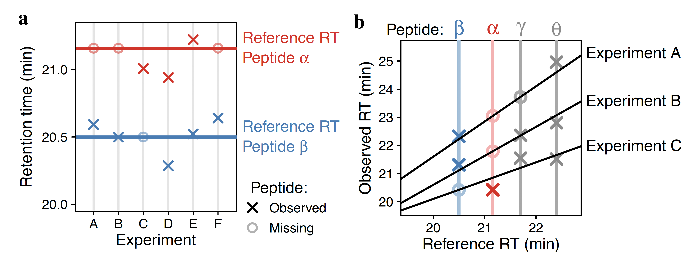

Supporting Information
DART-ID increased single-cell proteome coverage
Preprints SCoPE-MS DART-ID mPOP
Data MassIVE ProteomeXchange RAW data DART-ID Report
GitHub Code DART-ID DO-MS
Summary
Analysis by liquid chromatography and tandem mass spectrometry (LC-MS/MS) can identify and quantify thousands of proteins in microgram-level samples, such as those comprised of thousands of cells. Identifying proteins by LC-MS/MS proteomics, however, remains challenging for lowly abundant samples, such as the proteomes of single mammalian cells. To increase the identification rate of peptides in such small samples, we developed DART-ID. This method implements a data-driven, global retention time (RT) alignment process to infer peptide RTs across experiments. DART-ID then incorporates the global RT-estimates within a principled Bayesian framework to increase the confidence in correct peptide-spectrum-matches. Applying DART-ID to hundreds of samples prepared by the Single Cell Proteomics by Mass Spectrometry (SCoPE-MS) design increased the peptide and proteome coverage by 30 - 50% at 1% FDR. The newly identified peptides and proteins were further validated by demonstrating that their quantification is consistent with the quantification of peptides identified from high-quality spectra. DART-ID can be applied to various sets of experimental designs with similar sample complexities and chromatography conditions, and is freely available online.Global retention time alignment

Bayesian inference framework

Chen A, Franks A, Slavov N.✉ (2018)
DART-ID increases single-cell proteome coverage
bioRxiv DOI: 10.1101/399121 PDF | RAW Data @ MassIVE | RAW Data @ ProteomeXchange | GitHub
DART-ID increases single-cell proteome coverage
bioRxiv DOI: 10.1101/399121 PDF | RAW Data @ MassIVE | RAW Data @ ProteomeXchange | GitHub